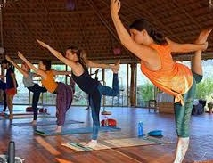
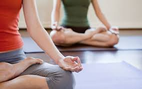
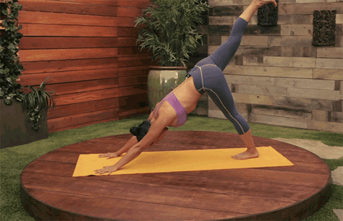
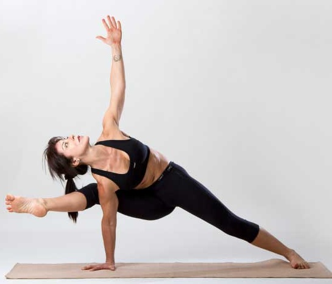
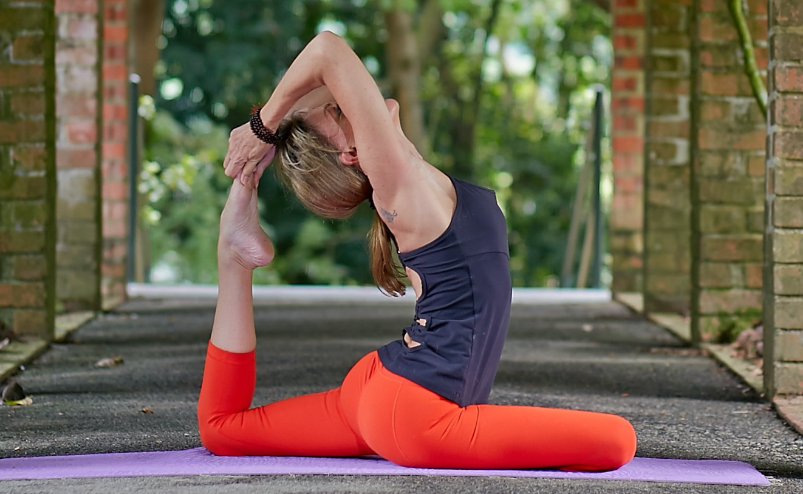
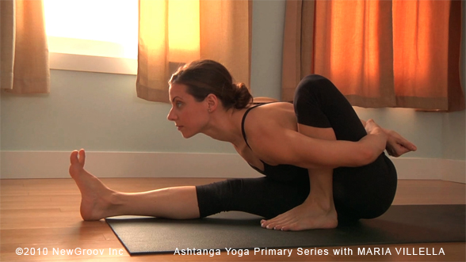
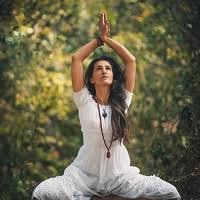
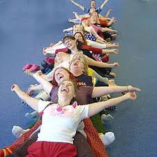

Lo yoga è una disciplina millenaria il cui scopo è far ritrovare il benessere e la pace interiore agli individui che lo praticano attraverso l’equilibrio tra corpo, mente e spirito. Esistono diversi stili, ognuno si differenzia dall'altro, avvicinandosi al mondo dello yoga può essere difficile trovare il più giusto per se.
Qualsiasi stile di yoga si scelga, si può migliorare in forza, flessibilità e equilibrio. Tutti gli stili di yoga possono aiutare ad allentare le tensioni nel corpo, calmare la mente e a rilassarsi. Per ottenere il massimo beneficio, è consigliabile scegliere uno stile di yoga che corrisponde al livello di forma fisica e allo stato
mentale ed emotivo attuale.
Ci sono stili più attivi come il vinyasa yoga o il bikram yoga, che possono aiutare a rimmettersi in forma grazie al maggior sforzo fisico dovuto ad una serie di
asana più energici.
Se si vuole iniziare yoga, questo è il migliore stile per i principianti.
Per Hatha Yoga si intende uno stile generico, che non segue particolari scuole, ma si rifà semplicemente alla tradizione. Quasi ogni tipo di yoga insegnato in occidente è una variante dell’Hatha Yoga classico.

In questo tipo di yoga si effettua un modesto sforzo fisico con lo scopo di riuscire a superare i propri limiti fisici, e per questo è adatto a tutte le età. Nello stesso tempo però, non si dimenticano mai il rilassamento e la calma che dovrebbero esserci in ogni posizione.

Alla fine di ogni classe ci si sente più forti, più flessibili e sicuramente più rilassati, anche per l'importanza che viene data alla fase di rilassamento finale.
L’Hatha Yoga, così come altri stili, aumenta la forza dei muscoli dandogli allo stesso tempo flessibiltà, toglie rigidità alla colonna vertebrale e mantiene le articolazioni elastiche anche se gli anni passano. In generale si ha una maggiore consapevolezza del proprio corpo ed anche la mente ha innumerevoli benefici.
CORPO
MENTE
Vinyasa è una parola sanscrita che significa “flusso”, infatti le classi di questo stile sono note per il movimento e perché sono particolarmente intense, spesso si trova con il nominativo di yoga dinamico.

Infatti i praticanti, durante le classi, passano da un asana all’altro continuamente e le pause sono rare, diversamente da altri stili dove non è raro che ci si fermi più spesso per perfezionare gli allineamenti. Si tratta di una tecnica che pone l’accento sul passaggio fluido tra una posizione e l’altra, come una sorta di danza.
Per i principianti è consigliabile iniziare con qualche lezione in uno stile più lento, come l'hatha yoga.

Lo yoga dinamico può avere benefici a livello cardiovascolare e aumentare forza e resistenza.
Un lato negativo di questo stile è proprio il non potersi soffermare a fondo sulla posizione perché non si ha il tempo di comprenderla in pieno, rischiando di perdere i contenuti spirituali della disciplina avvicinandola un troppo alla ginnastica.
CORPO
MENTE
L’ashtanga yoga deriva dal vinyasa, è infatti uno stile di yoga basato sulla coordinazione di respiro e movimento come collegamento tra le posizioni.
Questo è tra i più diffusi tipi di yoga al mondo, nonostante la sua difficoltà, infatti è uno stile molto rigoroso e impegnativo dal punto di vista fisico, adatto alle persone allenate e in buona salute, meno indicato per chi abbia problemi di salute e per i più anziani.

L’esecuzione delle asana (ovvero le pose che si assumono) avviene in un flusso, le posizioni sono collegate tra loro da movimenti di transizione e coordinate con il respiro, che riveste grande importanza. La respirazione è nasale, rumorosa, vigorosa e scandisce il movimento, che avviene sempre in corrispondenza di una espirazione o inspirazione.
A differenza del Vinyasa flow yoga, che è per i più atletici e dinamici, questo stile di yoga offre un buon allenamento e nello stesso tempo una bella esperienza di yoga.

La sequenza vera e propria è composta da 6 posture fondamentali e hanno il potere di purificare il corpo e di riportarlo in equilibrio energetico. La pratica di queste prime sei posture migliora notevolmente la flessibilità attraverso un lavoro sulle articolazioni che man mano si sciolgono e aprono, rinforzando in particolar modo le gambe e la schiena. Si determina la perdita di volume corporeo, sciogliendo il grasso e iniziando un lavoro di pulizia degli organi interni. Migliora l’ossigenazione grazie all’aumento della circolazione e dalla fluidificazione del sangue.
CORPO
MENTE
Questa pratica di yoga aiuta a risvegliare l’energia generale del corpo, il termine kundalini indica un’energia non tangibile collocata alla base della colonna. Nelle classi di kundalini yoga si vedono i praticanti vestiti con abiti fluidi, corpicapi e turbanti bianchi, una scelta dettata dalla ricerca di espansione di energia. Ogni colore è energia che crea un effetto nel subconscio, il colore bianco dà senso di espansione.

È una potente pratica spirituale che apre le porte ad ogni praticante regalando benessere fisico, mentale, energetico ed emotivo. Secondo questo stile di yoga l’energia si risveglia grazie alla pratica delle asana, agli esercizi di respirazione, alla pratica regolare della meditazione e al canto dei mantra. Talvolta viene chiamato anche yoga della consapevolezza e mira a coltivare il potenziale creativo e spirituale dell’essere umano. Sono numerosi i benefici, rende più forti ed energici, migliora la respirazione, favorisce la digestione, aiuta a superare le cattive abitudini, purifica il corpo e contribuisce all’eliminazione delle tossine.
CORPO
MENTE
Questo è una vera e propria forma di yoga che si basa su un concetto molto semplice la risata autoindotta.
Situazioni difficili, stress, impegni e troppo lavoro, purtroppo ci hanno portato a ridere sempre di meno, che non fa assolutamente bene per la salute.
Grazie allo yoga della risata si possono utilizzare delle tecniche per ridere spontaneamente e così si hanno innumerevoli benefici sia nel corpo e che nella mente.

Questo stile di yoga si pratica in gruppo e inizialmente si usano delle tecniche per stimolare la risata autoindotta, ma nel giro di poco tempo, questo semplice e stupendo gesto, diventa incredibilmente contagioso e anche spontaneo.
CORPO
MENTE